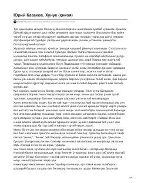

XHQishloq to'yida o'zini yolg'iz his qilgan qizning taqdiri haqidagi ta'sirli hikoya.
Ushbu hikoya qishloq to'yida o'zini yolg'iz va baxtsiz his qilgan Sonya ismli qizning kechinmalari haqida hikoya qiladi. Tasodifiy uchrashuv va mast holatdagi Nikolay bilan bo'lgan muloqot qizning hayotga bo'lgan qarashlarini va ichki dunyosini ochib beradi.